Simulation-疲劳分析
疲劳破坏是指结构在远低于材料强度极限甚至屈服极限的交变应力作用下发生破坏的现象。材料在循环应力和应变作用下，在一处或几处逐渐产生局部永久性累积损伤，经一定循环次数产生裂纹或突然发生完全断裂的过程
静应力分析
疲劳分析前你需要对疲劳添加下的静态受力进行分析，这里有两个目的：
1、确定静态下的模型未发生屈服失效；
2、为疲劳分析提供静态工况下的受力条件；
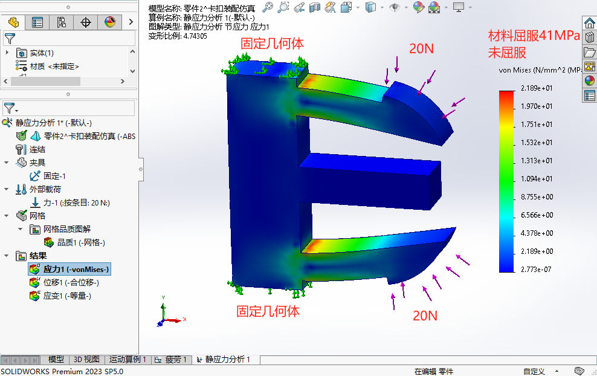新建疲劳分析
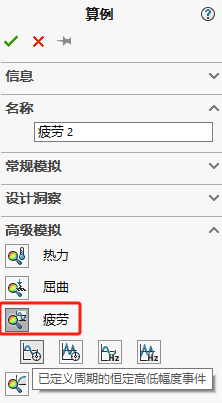添加事件
添加前面的静应力分析算例作为事件，并数值循环次数和类型，
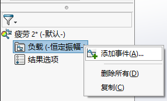本次的循环类型是描述：按压受力的情况，即受力时最大值，不受力时基于0。
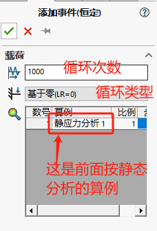材料SN曲线
应用材料的疲劳SN曲线，描述金属材料在循环承受交变应力和失效循环周次之间的关系曲线，用以表征材料抵抗交变应力的能力，SN 曲线只用于疲劳算例。
注意此应力为应力幅，非结构分析中的应力。此应力幅称为一定循环作用次数N的极限应力，也称为条件疲劳极限，以横坐标为作用次数N、纵坐标为应力幅，绘成曲线，则称为材料的S-N曲线，S-N曲线通常绘制于双对数坐标系下
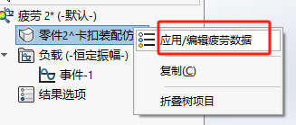 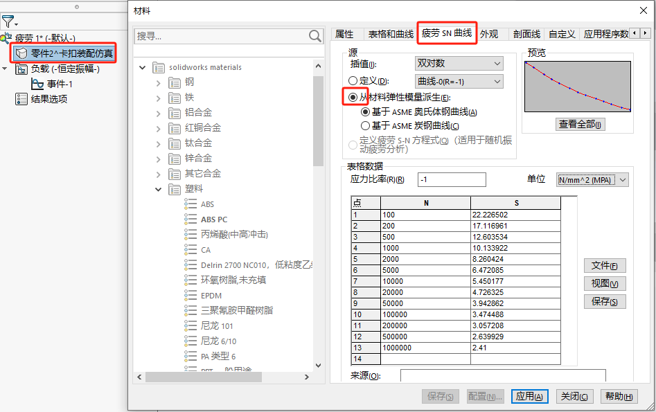运行算例
出现断裂的位置：
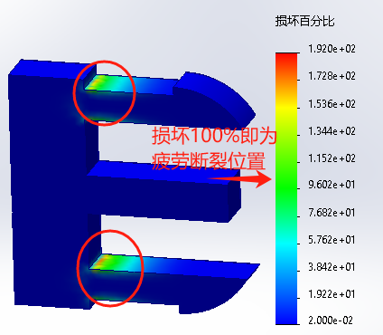出现断裂的次数：
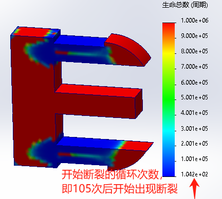Q&A
循环类型
- 完全反转：-最大值——+最大值
- 基于0：0——最大值
- 加载比率：
- 查找周期峰值
循环次数确定
如果结果的损坏百分比100%位置不明显。可以减小循环次数，放大百分比范围
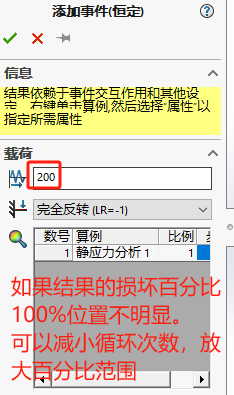算例错误
疲劳分析前需要先计算【静态应力分析】作为事件算例
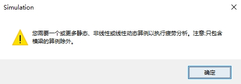疲劳分析前需要先计算【静态应力分析】确保在应力强度屈服内
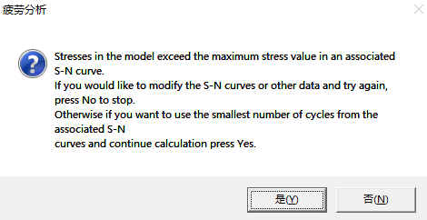疲劳分析时，负载应足够大确保能造成疲劳破坏。
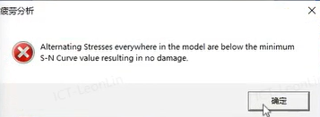算例属性
“计算交替应力的手段”对疲劳“结果”的影响。这里计算手段对应的是4个强度理论？